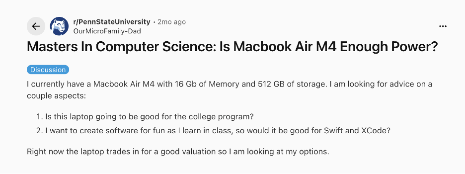

Penn State Reddit
Penn State Reddit can be a useful resource for computer science majors because students often share advice about classes, electives, professors, and workload. This can help students make better decisions when planning their schedule and choosing computer science electives.
It can also be helpful for learning which classes are considered difficult, how much time certain courses require, and what other students recommend taking together. Students may also share internship experiences, including interview processes for specific companies, which can help with preparation.
How it helps a Penn State CS major
- Helps students choose computer science electives
- Gives insight into difficult classes and workloads
- Provides advice from other Penn State students
- Can include internship and interview process experiences

Official link: Visit Penn State Reddit